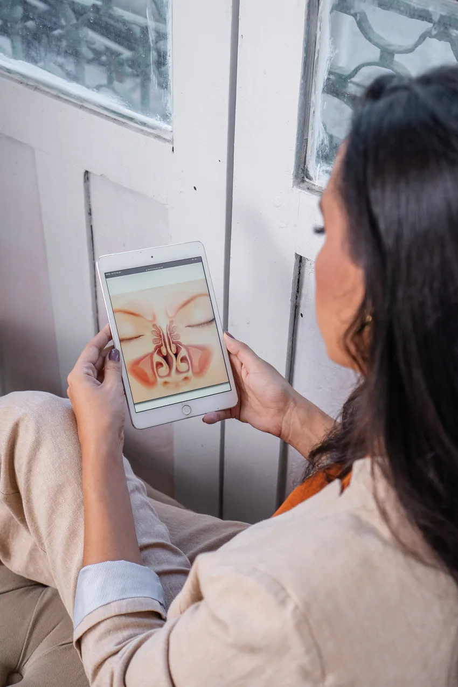
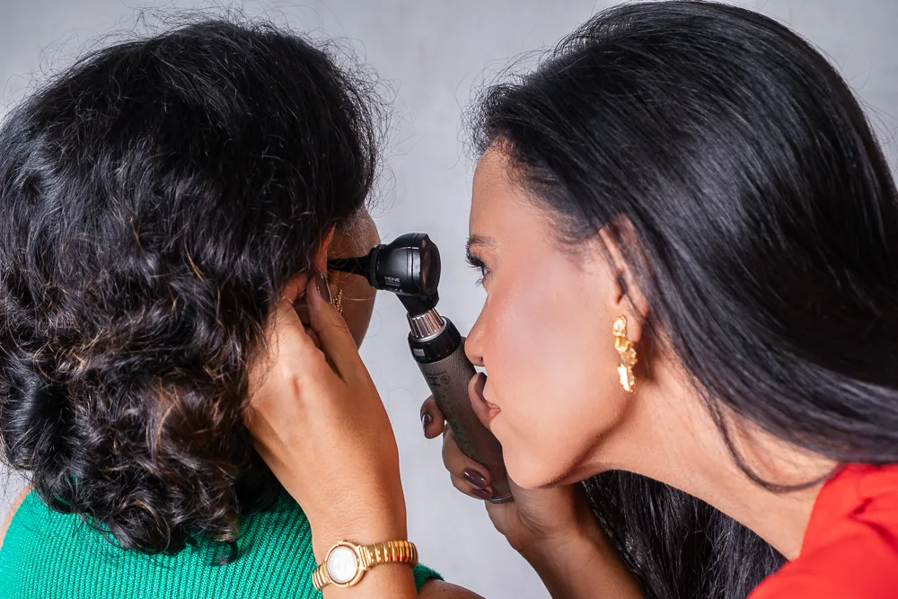

Rinite e obstrução nasal
Para quem convive com congestão, sintomas de rinite ou dificuldade para respirar pelo nariz.
Dra. Thaís Aguiar Otorrinolaringologista
Uma escuta cuidadosa para entender o que afeta sua respiração, seu sono e a saúde do nariz.
Quando procurar ajuda
Sintomas persistentes merecem atenção. A avaliação é o primeiro passo para compreender o que está acontecendo.
Áreas de atuação

Investigar bem é parte essencial do cuidado.
Para quem convive com congestão, sintomas de rinite ou dificuldade para respirar pelo nariz.
Avaliação de sintomas recorrentes ou prolongados dos seios da face.
Investigação da obstrução nasal e das opções adequadas a cada caso.
Atenção às queixas respiratórias durante o sono e às alterações na percepção dos cheiros.
Atuação cirúrgica quando houver indicação após avaliação individual.
A experiência da consulta
A consulta começa com a escuta do que você sente e de como isso afeta sua rotina. A partir da avaliação, os próximos passos são conversados com clareza.
Agendar consultaSua história e suas queixas têm espaço.
O exame otorrinolaringológico é orientado pela necessidade clínica.
Você entende as possibilidades de cuidado para o seu caso.
A conduta é definida de forma individualizada.

Atenção aos detalhes
Uma conversa clara ajuda a transformar dúvidas em decisões mais conscientes sobre a própria saúde.
Sobre a Dra. Thaís
A Dra. Thaís Aguiar atua em otorrinolaringologia, com aprofundamento em rinologia e cirurgia endoscópica nasal.
Seu trabalho se dedica à investigação das queixas do nariz e dos seios da face, à respiração e aos sintomas que interferem no dia a dia.
Medicina pela Faculdade Pernambucana de Saúde — FPS
Otorrinolaringologia pela FAMERP
Subespecialização em Rinologia e Cirurgia Endoscópica Nasal pela FAMERP
Membro da Pernambuco Otorrinos
CRM-PE 27267 · RQE 16311
Dúvidas frequentes
Algumas respostas para ajudar no seu primeiro passo.
Quando sintomas como nariz entupido, crises de sinusite, ronco, dificuldade para respirar pelo nariz ou alterações do olfato se tornam frequentes ou persistentes.
Não. São condições diferentes, embora alguns sintomas possam se parecer. A avaliação ajuda a identificar o que está acontecendo.
Não. A conduta depende dos sintomas, do exame e da avaliação individual.
O agendamento é feito pelo WhatsApp. O local e a disponibilidade são confirmados durante o contato.
Atendimento
Local e disponibilidade são confirmados no momento do agendamento.
Seu próximo passo
Entre em contato para agendar sua avaliação com a Dra. Thaís Aguiar.
Agendar minha consulta